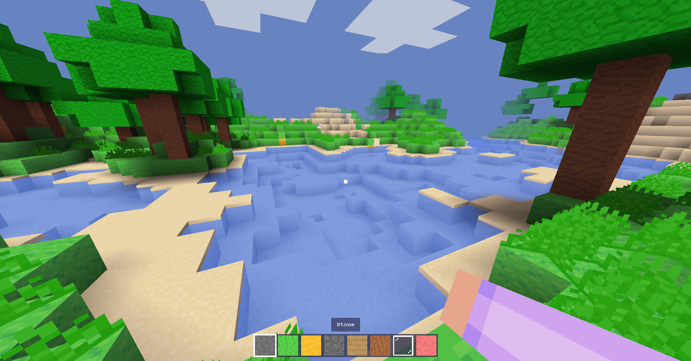
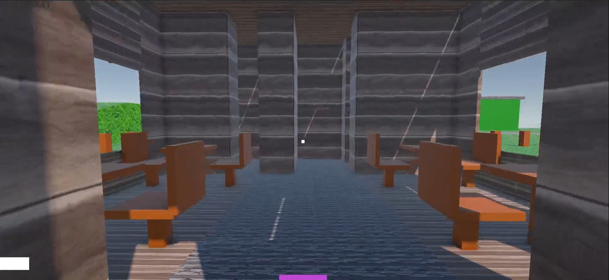
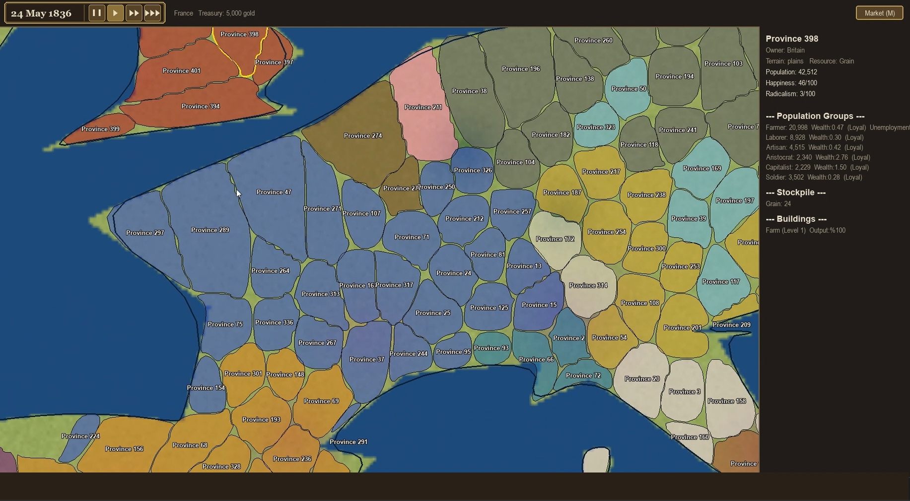
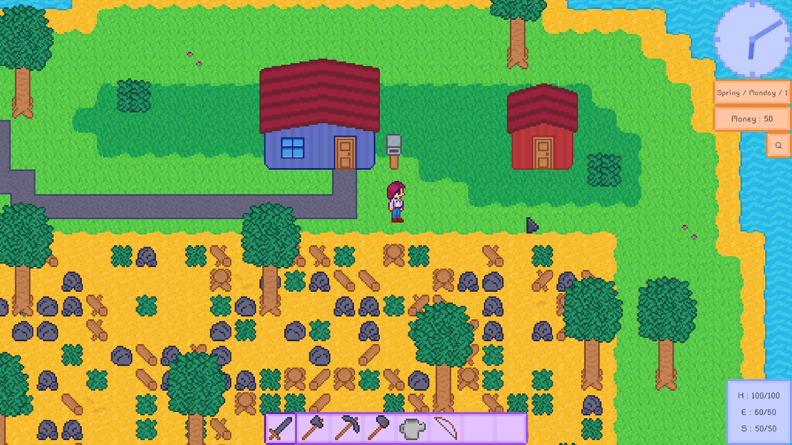
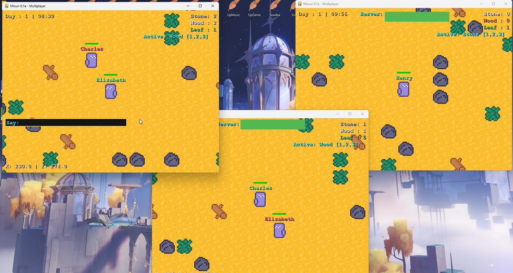
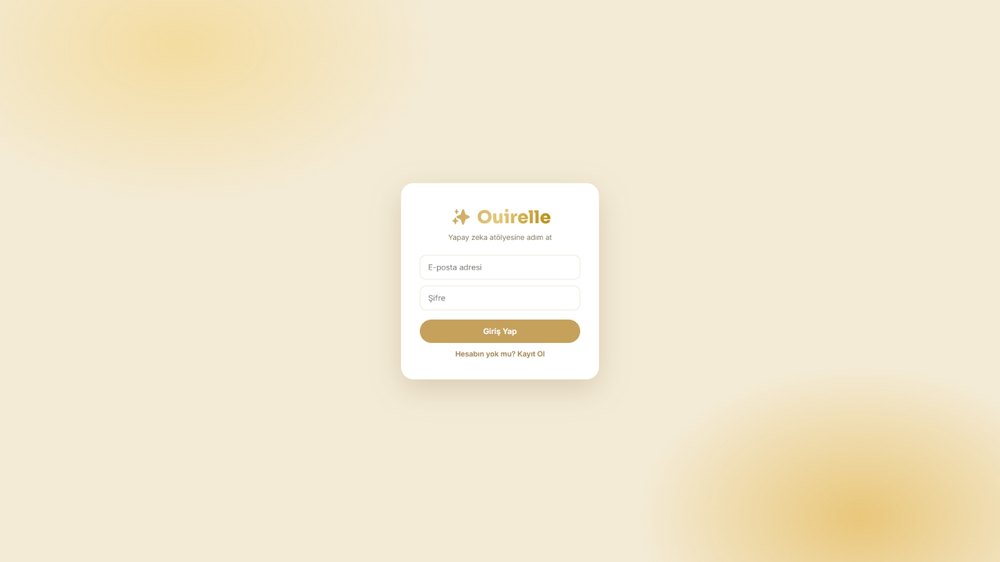
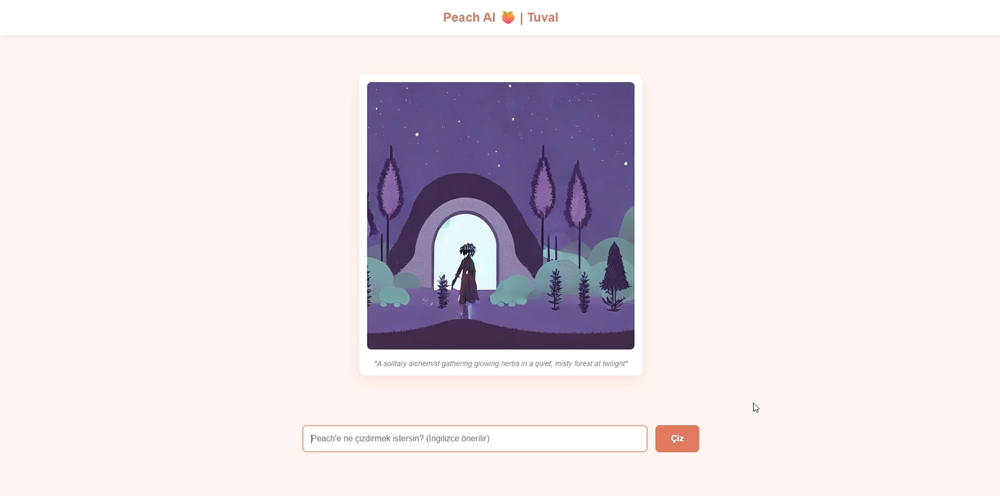
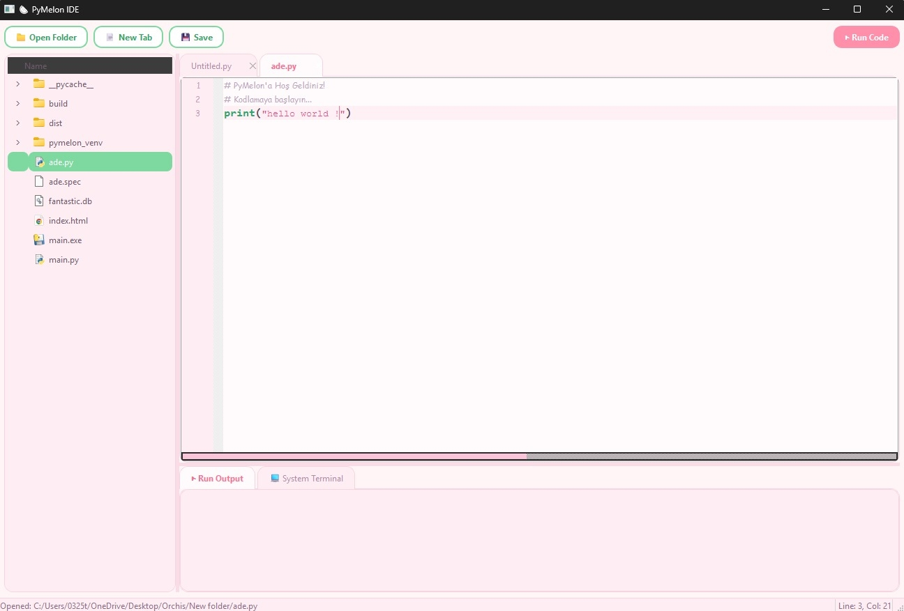
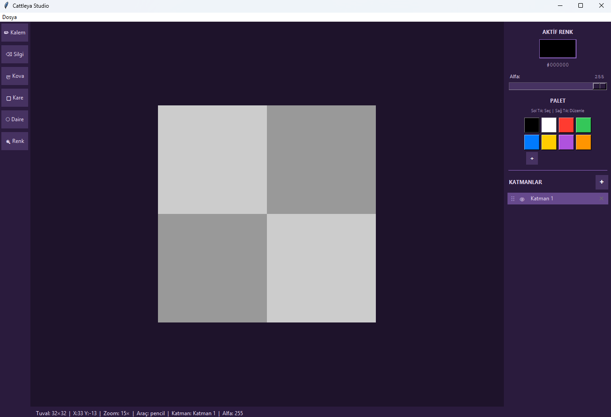
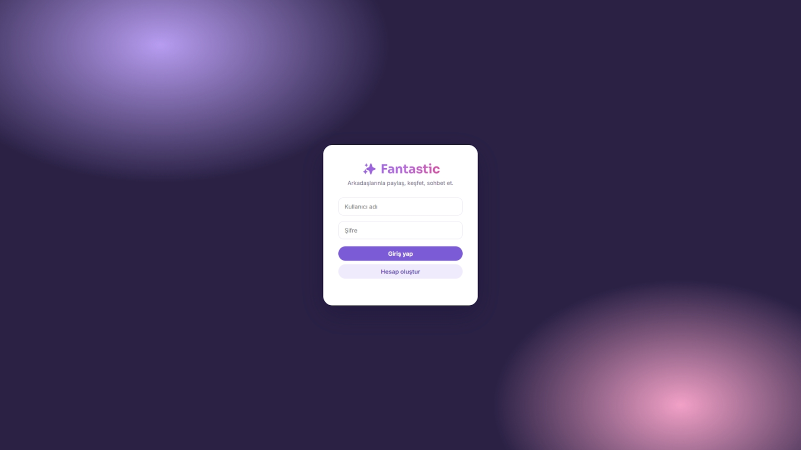

Akıllı uygulamalar ve etkileşimli sistemler tasarlayan bir yazılım geliştirici & yapay zekâ meraklısı.
Bireysellik · Eğitim · Özgürlük
Gerçek eğitim, insanın kendi bireyselliğini keşfetmesini sağlar. Bireyselliğini keşfeden kişi ise gerçek özgürlüğüne kavuşur ve onu korumayı bilir.
Yazılımı ve yapay zekâyı yalnızca teknik araçlar olarak değil; anlatı kurmanın, dünya inşa etmenin ve insan davranışını anlamanın bir uzantısı olarak görüyorum. Her proje, bir mühendislik problemi kadar bir merak ve estetik meselesidir — bu yüzden kod kadar kurgu, sistem kadar felsefe önemlidir.
“Bilgi, kendi başına bir güçtür.”Francis Bacon
Her dünya, kendi fiziği ve ekonomisiyle var olur.

Python, pygame ve PyOpenGL ile yazılmış, 3B voksel oyunu. Sonsuz harita akışı ve VBO tabanlı özel bir render motoru barındırır.
Kaynak Kodu ↗
Unity’de geliştirilen bir bitki pazarı simülasyonu. Yapay zeka destekli dinamik fiyatlandırma ve iki aşamalı bir mimariyle çalışan NPC diyalog sistemi içerir.
Kaynak Kodu ↗
Voronoi tabanlı bir il haritası ve iki aşamalı bir üretim ekonomisine sahip 2B strateji oyunu.
Kaynak Kodu ↗
Kurgusal dünya inşasının ve oyun tasarımının bir arada işlendiği, gelişimi süren bir proje.
Kaynak Kodu ↗
“Hayal gücü, keşfin gerçek kapı bekçisidir.”Ada Lovelace
Mekanik akıl yürütmenin eşiğinde küçük deneyler.

Qwen3-8B tabanlı, LoRA ile ince ayarlanmış “Lotus” modelini çalıştıran özel bir yapay zeka asistan platformu. JWT ve API anahtarıyla kimlik doğrulama, SSE ile canlı akış ve görsel üretim için Peach AI entegrasyonu barındırır.
Kaynak Kodu ↗
Sohbet arayüzüne gömülü bir /draw komutuyla çalışan, Stable Diffusion tabanlı görsel üretim modülü.
Kaynak Kodu ↗“Bilmek yetmez, uygulamak gerekir; istemek yetmez, yapmak gerekir.”Johann Wolfgang von Goethe
Atelier Numérique — ürüne dönüşen fikirler.



“Yıldızları doğurabilmek için insanın içinde hâlâ kaos barındırması gerekir.”Friedrich Nietzsche
Kodun ötesinde kalan disiplin — okumak, sorgulamak, sistemleri anlamak.
Stratejik karar alma süreçlerini oyun teorisi merceğinden inceleyen, grafiklerle desteklenmiş akademik araştırmalar.
Büyük dil modellerinin davranışını yönlendirmek için sistematik prompt tasarımı, ince ayar veri kümeleri ve akıl yürütme izleri üzerine çalışmalar.
Kartvizit Kabinesi
Çalışmaların ve izlerin dağıldığı adresler.